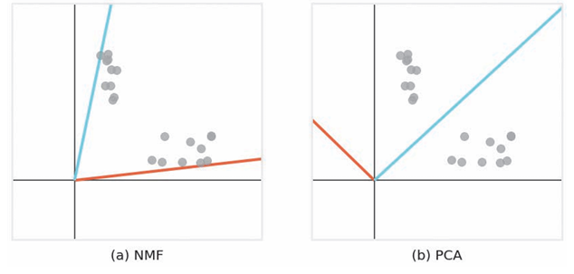
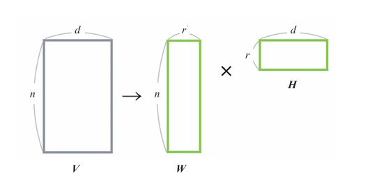
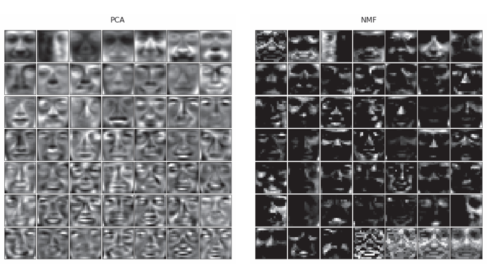

NMF#
概述#
NMF(Non-negative Martix Factorization,非负矩阵分解)是一种降维算法也是一种矩阵分解方法。
NMF有以下特点：
原始矩阵的元素和分解后矩阵的元素是非负数
没有“潜在语义空间的每一个维度都是正交的”这一约束条件
以下分别为对二维数据应用NMF和PCA的结果。

可以看出NMF的潜在空间的每个轴会靠近密集的点，使得轴上有重复信息。这一特性使得我们可以捕捉到多个数据块的特征。
而PCA等算法则由于其潜在空间的维度是正交的，所以无法找到所有数据块的特征。
算法说明#
实例#
假设我们有以下三篇文档：
文档1：谈论人工智能和机器学习。
文档2：讨论深度学习和神经网络。
文档3：介绍数据分析和统计学。
通过 NMF，可以将文档表示为某些“主题”的线性组合。例如：
主题A：与“人工智能、机器学习”相关。
主题B：与“统计学、数据分析”相关。
主题C：与“深度学习、神经网络”相关。
NMF 的结果可能如下：
文档1 ≈ 0.6 × 主题A + 0.3 × 主题C
文档2 ≈ 0.8 × 主题C + 0.1 × 主题A
文档3 ≈ 0.7 × 主题B + 0.2 × 主题A
这个表示让我们可以用主题分布来描述每篇文档，比如：
文档1的“主题A贡献”为0.6，“主题C贡献”为0.3。
抽象化#
设原始数据为\(n\)行\(d\)列的矩阵\(V\)。将其表示为两个矩阵\(W\)和\(H\)的乘积。
\(W\)是\(n\)行\(r\)列的矩阵，是一个 文档 - 主题 矩阵每一行表示一个文档在不同主题上的权重。
\(H\)是\(r\)行\(d\)列的矩阵，每一列表示一个主题在各个词汇上的权重。
\(WH\)是原始矩阵\(V\)的近似，选择比\(d\)小的\(r\)就可以进行降维。

在求\(W\)和\(H\)的过程中，NMF在\(W ≥ 0、H ≥ 0\)的条件下，使\(WH\)接近\(V\)。
NMF采取“将\(H\)视为常数，更新\(W\)”“ 将\(W\)视为常数，更新\(H\)”的方式交替更新\(W\)和\(H\).
以下对NMF过程进行可视化。
灰色的点为原始矩阵\(V\)，绿色的点为近似矩阵\(WH\)。随着计算的进行，我们可以看到近似矩阵越来越接近原始矩阵。此外，红线和蓝线是潜在空间的轴，所有近似矩阵的图形都能在潜在空间（二维空间）的轴上表示出来
将\(W\)和\(H\)初始化为正值。
将\(H\)视为常数，更新\(W\)。
将\(W\)视为常数，更新\(H\)。
当\(W\)和\(H\)收敛时，停止计算。

示例代码#
from sklearn.decomposition import NMF
from sklearn.datasets.samples_generator import make_blobs
centers = [[5, 10, 5], [10, 4, 10], [6, 8, 8]]
V, _ = make_blobs(centers=centers) # 以centers为中心生成数据
n_components = 2 # 潜在变量的个数
model = NMF(n_components=n_components)
model.fit(V)
W = model.transform(V) # 分解后的矩阵
H = model.components_
print(W)
print(H)
详细说明#
NMF与PCA的比较#
将NMF和PCA应用到一个人脸数据集上（19像素×19像素，2429张），降维后由49个变量表示数据。即将361个特征变换为49个潜在变量。
将49个潜在变量可视化

左图为PCA结果，每张图像表示了人的整个面部，负值暗，正值亮。PCA通过将不同的脸加在一起恢复原始图像。
右图为NMF的结果，暗区较多，但这些区域的值为0.。每个潜在变量代表了人脸的一部分特征。NMF通过组合具有人脸部分特征的图像来回复原始图像，NMF的潜在变量含义可解释性更强，能够清晰地反映数据的实际意义和结构。